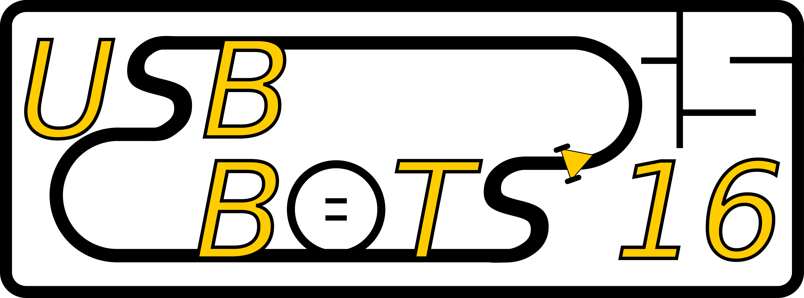
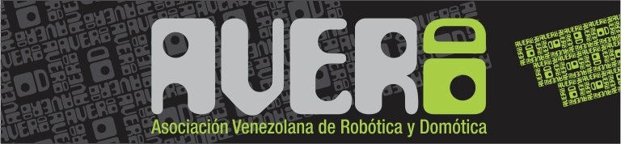

¡Bienvenido! En esta sección encontrará los reglamentos de la VI Competencia Nacional de Robótica.
Este documento contiene los reglamentos generales de las cuatro competencias a llevarse a cabo.
En esta categoría, cada equipo participante debe diseñar y construir un robot seguidor de línea que recorra en forma autónoma una pista determinada en el menor tiempo posible. La pista estará formada por una línea negra sobre fondo blanco. En la competencia de este año, se agregará una dificultad extra: la presencia de bifurcacions en la pista. Los caminos resultantes de la bifurcación pueden tener recorridos de diferente tamaño, por lo cual se indicará el recorrido más corto con una marca.
En esta categoría, el equipo participante debe diseñar y construir un robot autónomo capaz de empujar a su contricante hasta sacarlo de la arena de competencia.
En esta categoría, el equipo participante debe diseñar y construir un robot autónomo capaz de navegar en un laberinto de dimensión constante, en el menor tiempo posible.
En el fondo de una espacio de agua somero se encuentran los restos de un buque que naufragó contra un arrecife. La carga del buque consistía en material industrial de contenido radioactivo que no puede ser recuperado por un equipo de buzos. Dicho material está contenido en cilindros que quedaron dispersos por el área del naufragio. Dadas las condiciones de corriente, oleaje y viento, la operación de rescate no puede durar mas de 10 minutos. La Asociación Venezolana de Robótica desea contratar a un equipo que sea capaz de recuperar dichos cilindros de la zona del naufragio, utilizando para ello tecnología robótica.
